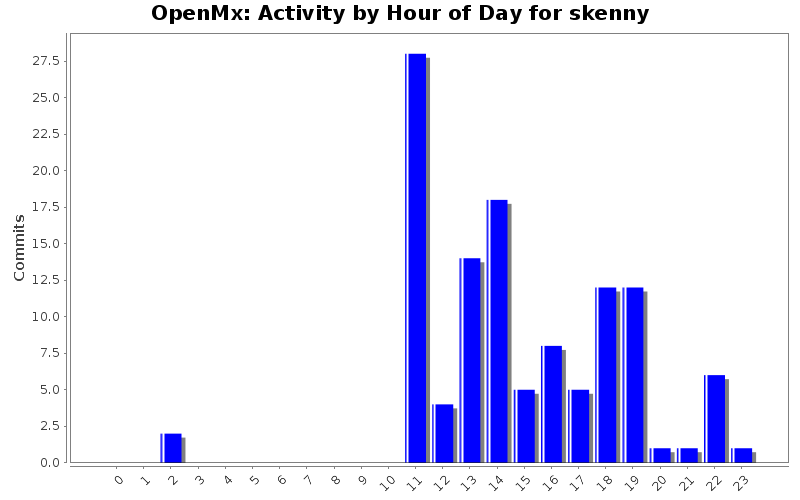
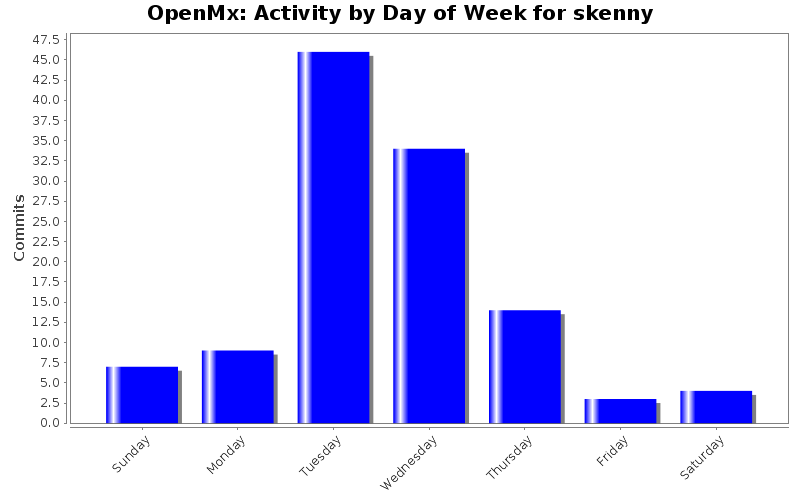
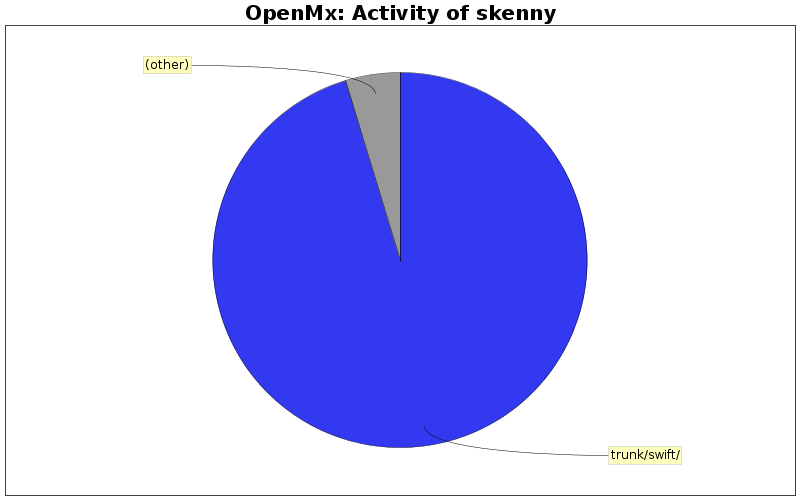

| Directory | Changes | Lines of Code | Lines per Change |
|---|---|---|---|
| Totals | 117 (100.0%) | 1106 (100.0%) | 9.4 |
| trunk/swift/ | 30 (25.6%) | 1054 (95.3%) | 35.1 |
| trunk/src/ | 4 (3.4%) | 24 (2.2%) | 6.0 |
| trunk/swift/demo/ | 18 (15.4%) | 20 (1.8%) | 1.1 |
| trunk/R/ | 2 (1.7%) | 5 (0.5%) | 2.5 |
| trunk/ | 3 (2.6%) | 2 (0.2%) | 0.6 |
| trunk/swift/demo/scripts/ | 2 (1.7%) | 1 (0.1%) | 0.5 |
| trunk/swift/demo/results/ | 2 (1.7%) | 0 (0.0%) | 0.0 |
| trunk/inst/npsol/windows/x86/rtools2.9/ | 1 (0.9%) | 0 (0.0%) | 0.0 |
| trunk/inst/npsol/linux/x86_64/gcc4.1/ | 1 (0.9%) | 0 (0.0%) | 0.0 |
| trunk/inst/npsol/linux/x86_64/gcc3.4/ | 1 (0.9%) | 0 (0.0%) | 0.0 |
| trunk/inst/npsol/linux/x86/gcc3.4/ | 1 (0.9%) | 0 (0.0%) | 0.0 |
| trunk/inst/npsol/linux/x86/ | 32 (27.4%) | 0 (0.0%) | 0.0 |
| trunk/inst/npsol/linux/32bit/ | 16 (13.7%) | 0 (0.0%) | 0.0 |
| trunk/inst/npsol/linux/ | 4 (3.4%) | 0 (0.0%) | 0.0 |

demo needs to be updated to run with newer code, removing for beta
0 lines of code changed in 11 files:
obsolete
0 lines of code changed in 1 file:
updated to use newer model specifications
32 lines of code changed in 1 file:
works on vista
0 lines of code changed in 1 file:
added a new arch-gcc combo
0 lines of code changed in 1 file:
lib for 32bit running gcc3.4
0 lines of code changed in 1 file:
no longer needed
0 lines of code changed in 1 file:
uses new optimizer, generates and runs single model based on a permutaiton number
229 lines of code changed in 1 file:
mapper no-longer needed, models are generated and processed based on the permutation number
0 lines of code changed in 1 file:
this has been rewritten in R using the new optimizer
0 lines of code changed in 1 file:
formatting
7 lines of code changed in 1 file:
prototype for languation study
10 lines of code changed in 1 file:
linux 64bit gcc3_4 added
4 lines of code changed in 1 file:
lib for gcc3_4 64bit
0 lines of code changed in 1 file:
updated
0 lines of code changed in 4 files:
compiled with gcc 4_3_0
0 lines of code changed in 4 files:
recompiled with gcc 4_1_1
0 lines of code changed in 4 files:
compiled on 32bit machcine
0 lines of code changed in 4 files:
link to fortran libs
3 lines of code changed in 1 file:
recompiled for 32bit
0 lines of code changed in 4 files:
(45 more)